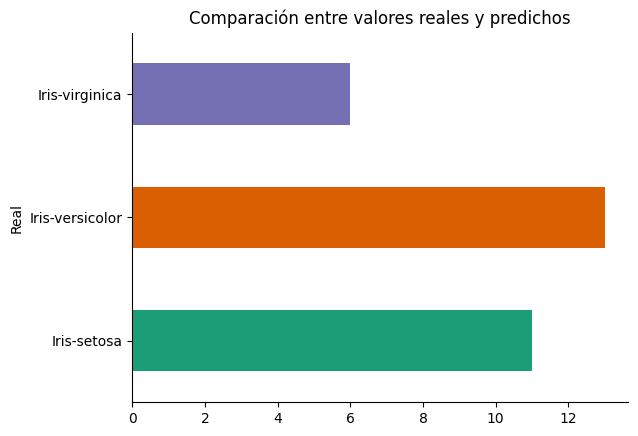
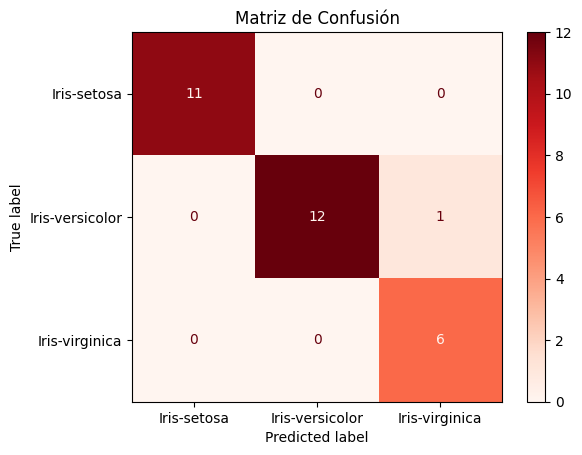

Árbol de Decisión ID3 aplicado al Dataset Iris
Transformación integral de un modelo científico interactivo en una plataforma botánica empresarial. Lógica interpretable, documentación académica en Word y despliegue ágil estructurado bajo la metodología CRISP-ML.
Ciclo de Vida del Proyecto: CRISP-ML
Garantía de calidad técnica y organizativa a lo largo de las 7 etapas del ciclo de vida del modelo de Machine Learning.
Comprensión del Negocio y Problema
Automatizar la catalogación botánica reduciendo tiempos de clasificación manual en un 90% con fiabilidad superior al 95%, garantizando interpretabilidad mediante un árbol de decisión explicable ("caja blanca").
Comprensión de los Datos
Análisis de las 150 muestras balanceadas de flores de Iris (Setosa, Versicolor, Virginica) recolectadas por Ronald Fisher, con 4 descriptores continuos sin valores nulos.
Preparación de los Datos
Extracción limpia de características y separación reproducible en proporción 80% entrenamiento (120 muestras) y 20% evaluación (30 muestras) usando random_state=1.
Modelado
Entrenamiento del modelo DecisionTreeClassifier con criterio de entropía para emular al algoritmo clásico ID3, optimizando la Ganancia de Información para obtener reglas lógicas óptimas.
Evaluación Científica
Pruebas estadísticas en el conjunto de prueba con una exactitud final del 96.67%. Identificación y desglose clínico de la única muestra de error cruzado.
Despliegue y Landing Page
Implementación del dashboard analítico en tiempo real en Streamlit (app.py) y del portal web de difusión corporativa para democratizar el uso del modelo.
Monitoreo y Mantenimiento
Propuesta de detección activa de desviación de datos (Data Drift) y flujos de reentrenamiento periódico (Human-in-the-loop) para asegurar la precisión del modelo a largo plazo.
Conjunto de Datos y Análisis Exploratorio
Exploración estadística del comportamiento morfológico de las características físicas de las flores.
Estructura Anatómica del Dataset
Las 4 características representan dimensiones físicas continuas. El perfecto balance de clases (50 muestras por especie) evita sesgos en el entrenamiento.
| Característica | Media (cm) | Rango (cm) | Separabilidad |
|---|---|---|---|
| Largo del Sépalo | 5.84 | 4.30 - 7.90 | Solapamiento general |
| Ancho del Sépalo | 3.05 | 2.00 - 4.40 | Solapamiento general |
| Largo del Pétalo | 3.76 | 1.00 - 6.90 | Alta separabilidad |
| Ancho del Pétalo | 1.20 | 0.10 - 2.50 | Separabilidad extrema |

Distribución perfectamente equilibrada del dataset, ideal para evitar sesgos algorítmicos.
El Corazón de la Lógica: Árbol de Decisión ID3
Extracción transparente de reglas jerárquicas lógicas para la toma de decisiones basada en Entropía.

Árbol de decisión aprendido por el algoritmo. Se observan hojas puras con entropía de cero.
Reglas Lógicas de Decisión Aprendidas
El árbol de decisión entrena umbrales de forma iterativa buscando la máxima reducción del desorden. Las reglas derivadas de la estructura entrenada son:
- Clasificación de Setosa: Si el ancho del pétalo (
petalwidth) es menor o igual a 0.8 cm, la flor es clasificada inequívocamente como Iris-setosa. - Zona de Transición: Si el ancho del pétalo es mayor a 0.8 cm y menor o igual a 1.75 cm, la muestra pertenece mayoritariamente a Iris-versicolor.
- Clasificación de Virginica: Aquellas muestras con ancho de pétalo superior a 1.75 cm son clasificadas de forma contundente como Iris-virginica.
Fórmula de Entropía de Shannon:
H(S) = - ∑ (p_i * log2(p_i))
Rendimiento Científico de Élite
Evaluación objetiva del modelo frente a datos de prueba no observados durante el entrenamiento.
Análisis Clínico de la Matriz de Confusión
El modelo clasifica a la perfección todas las instancias de Setosa y Virginica en el conjunto de prueba. Existe un único error de predicción donde un ejemplar real de Iris-versicolor es clasificado como Virginica.
Diagnóstico de la Falla:
La muestra correspondiente al índice 77 poseía un ancho de pétalo de 1.8 cm, cruzando el límite aprendido por el modelo de 1.75 cm. Esto se asocia al solapamiento morfológico natural que existe entre las especies maduras, validando que el modelo es sensible a la variación anatómica real.

Matriz de confusión científica obtenida directamente del notebook original.
Entorno de Producción e Interacción
Pruebe las predicciones en tiempo real y experimente con las variables mediante nuestro dashboard interactivo en Streamlit.
Cómo iniciar el dashboard localmente:
-
1
Instalar dependencias
Abra una consola de comandos en el directorio del proyecto y ejecute:
pip install -r requirements.txt -
2
Ejecutar el servidor local
Lance la aplicación web de Streamlit con el comando:
streamlit run app.py -
3
Disfrute de la experiencia
Se abrirá su navegador web predeterminado en la URL local donde podrá realizar predicciones en tiempo real y visualizar los gráficos.
Dashboard Interactivo
Formulario interactivo, visualización de árboles en tiempo real, importancia de variables y explicación gráfica espacial.
Abrir Código app.py